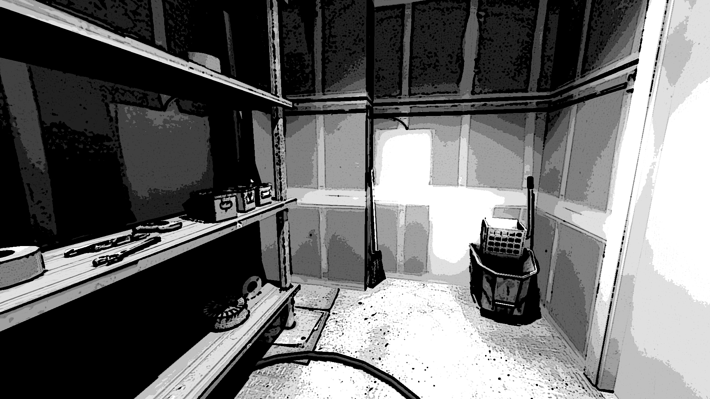

NARRADOR: Estênio resolve ir até o elevador… Espera, isso está errado. Por que você resolveu entrar na despensa?
NARRADOR: Ora, essa é uma despensa comum, um cubículo reservado para guardar os produtos de limpeza.
NARRADOR: Há aqui apenas vassouras, papéis para os supostos banheiros e os materiais de higiene, nada muito interessante.
NARRADOR: É claro que Estênio não iria ficar muito tempo nesse lugar comum e entediante…
NARRADOR: Então, de volta a história. Estênio, depois de uma visita à despensa, retorna ao corredor.
NARRADOR: Ora, Estênio, você realmente acha que teria algo interessante nessa dispensa? Deixa eu me reiterar... (pigarro)… HÁ AQUI APENAS VASSOURAS, PAPÉIS PARA OS SUPOSTOS BANHEIROS E OS MATERIAIS DE HIGIENE, NADA MUITO INTERESSANTE.
NARRADOR: Espero ter sido mais claro agora.
NARRADOR: Então, com toda a clareza de minha humilde explicação, Estênio SAI da despensa e volta para o corredor.
NARRADOR: Definitivamente Estênio não sabe seguir ordens, permanecendo na despensa, por mais que o Narrador insista em dizer que não tem nada de interessante nessa parte da história.
NARRADOR: Então, Estênio, você acha que vai alterar a minha narrativa dessa forma? Escolhendo ficar nesse depósito? Acho que precisamos recomeçar com o pé direito.
NARRADOR: Estênio resolve que ficou tempo o suficiente na despensa e RETORNA PARA O CORREDOR.